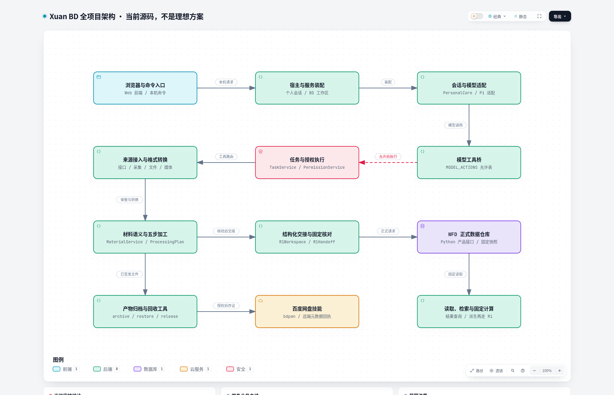

基线 cc7a4de2f3d8587d16c3d9527b2945ad5712ce4d · 四条业务主线，七条内部线路 · 真正使用 Archify 渲染
完整审核报告 · Markdown 原文 · 实际 Archify 总图 PNG

全仓扫描统计 · 真实宿主探针 · 全仓测试结果 · 逐文件清单 · Archify 生成回执
静态扫描覆盖全部跟踪代码。人工复核覆盖入口、关键运行链和被标记模块；未做生产账号与正式数据集全量联调。静态不可达不自动等于死代码。
| 目录模块 | 文件 | 实现文件 | 测试文件 |
|---|---|---|---|
| (root) | 10 | 1 | 0 |
| .github/workflows | 2 | 0 | 0 |
| adapters/database | 5 | 5 | 0 |
| adapters/llm | 1 | 1 | 0 |
| apps/server | 59 | 23 | 36 |
| apps/web | 88 | 58 | 0 |
| config/local-web-python-requirements.txt | 1 | 0 | 0 |
| config/local-web-toolchain.json | 1 | 0 | 0 |
| config/local-web.example.json | 1 | 0 | 0 |
| config/polars-requirements.txt | 1 | 0 | 0 |
| config/shortcuts.example.json | 1 | 0 | 0 |
| contracts/agent-question-contracts.ts | 1 | 1 | 0 |
| contracts/agent-skill-contracts.ts | 1 | 1 | 0 |
| contracts/algorithm-definition.ts | 1 | 1 | 0 |
| contracts/algorithm-design-catalog.ts | 1 | 1 | 0 |
| contracts/backend.ts | 1 | 1 | 0 |
| contracts/contracts.ts | 1 | 1 | 0 |
| contracts/conversion.ts | 1 | 1 | 0 |
| contracts/direct-conversation-contracts.ts | 1 | 1 | 0 |
| contracts/direct-runtime.ts | 1 | 1 | 0 |
| contracts/fixed-calculation-contracts.ts | 1 | 1 | 0 |
| contracts/llm.ts | 1 | 1 | 0 |
| contracts/memory-contracts.ts | 1 | 1 | 0 |
| contracts/personal-resource-contracts.ts | 1 | 1 | 0 |
| contracts/r1-contracts.ts | 1 | 1 | 0 |
| contracts/skill-contracts.ts | 1 | 1 | 0 |
| contracts/source-settings.ts | 1 | 1 | 0 |
| contracts/task-contracts.ts | 1 | 1 | 0 |
| contracts/tool-library.ts | 1 | 1 | 0 |
| contracts/ui-contracts.ts | 1 | 1 | 0 |
| contracts/workspace-services.ts | 1 | 1 | 0 |
| modules/agent | 25 | 24 | 0 |
| modules/collection | 111 | 70 | 41 |
| modules/financial | 21 | 18 | 3 |
| platform/capabilities | 26 | 21 | 3 |
| platform/config | 7 | 7 | 0 |
| platform/jobs | 2 | 2 | 0 |
| platform/plugins | 3 | 3 | 0 |
| platform/resources | 12 | 8 | 4 |
| platform/runtime | 9 | 8 | 1 |
| platform/security | 2 | 2 | 0 |
| platform/state | 1 | 1 | 0 |
| plugins/api-sources | 15 | 9 | 4 |
| plugins/capture-sources | 37 | 31 | 0 |
| plugins/financial | 19 | 14 | 0 |
| plugins/storage | 1 | 1 | 0 |
| scripts/adopt-bundled-resources.ts | 1 | 1 | 0 |
| scripts/adopt-financial-assets.ts | 1 | 1 | 0 |
| scripts/adopt-polars-python.test.ts | 1 | 0 | 1 |
| scripts/adopt-polars-python.ts | 1 | 1 | 0 |
| scripts/adopt-product-machine-wiring.test.ts | 1 | 0 | 1 |
| scripts/adopt-product-machine-wiring.ts | 1 | 1 | 0 |
| scripts/audit-r1-association-dangling.mjs | 1 | 1 | 0 |
| scripts/bd-workspace.ts | 1 | 1 | 0 |
| scripts/bootstrap-local-web.ts | 1 | 1 | 0 |
| scripts/compact-segment-storage.ts | 1 | 1 | 0 |
| scripts/local-web.mjs | 1 | 1 | 0 |
| scripts/migrate-candidate-objects.ts | 1 | 1 | 0 |
| scripts/prepare-runtime.ts | 1 | 1 | 0 |
| scripts/r1-cli.ts | 1 | 1 | 0 |
| scripts/repair-runtime-bindings.ts | 1 | 1 | 0 |
| scripts/run-wfd-product-p6.ts | 1 | 1 | 0 |
| scripts/share-material-originals.ts | 1 | 1 | 0 |
| scripts/test-local.mjs | 1 | 1 | 0 |
| scripts/verify-r1-real.ts | 1 | 1 | 0 |
| scripts/verify-r1-structured-handoff.ts | 1 | 1 | 0 |
| scripts/verify-wfd-product-machine.ts | 1 | 1 | 0 |
| scripts/web.ts | 1 | 1 | 0 |
| scripts/window.ts | 1 | 1 | 0 |
| staging/source-replacement-20261109 | 3 | 0 | 0 |
| staging/wfd_sdk | 1 | 1 | 0 |
| wfd/product | 136 | 36 | 54 |